사회조사분석사-1급 (2008-09-07 기출문제)
1과목: 고급조사방법론 I
1. 다음 중 자기기입식 질문지 문항을 배열하는 요령으로 옳은 것은?
- 문항의 순서를 무작위화 한다.
- 인구학적 자료에 대한 요청을 질문지의 앞쪽에 배치한다.
- 민감한 영역의 문항은 가급적 앞쪽에 배치한다.
- 일반적인 것을 먼저 묻고 특수한 것은 나중에 질문한다.
(정답률: 알수없음)

2. 다음 중 인터넷 여론조사의 장점이 아닌 것은?
- 표본의 대표성이 보장된다.
- 빠르고 신속한 조사가 가능하다.
- 응답자가 스스로 편리한 시간에 편리한 방법으로 참여할 수 있다.
- 멀티미디어 기능을 사용한 조사가 가능하다.
(정답률: 알수없음)
3. 다음 중 조사윤리에 대한 설명으로 가장 거리가먼 것은?
- 조사자는 조사결과에 대한 일반인들의 해석에도 관심을 가져야 한다.
- 조사자는 조사의뢰자의 사업정보 및 조사결과에 관한 정보를 비밀로 해야 한다.
- 조사자는 어떤 경우에도 조사대상자의 익명성을 보호해야 한다.
- 조사자는 조사결과를 공표할 때 조사의뢰자를 밝혀야 한다.
(정답률: 알수없음)
4. 조사연구를 크게 종단적 연구와 횡단적 연구로 분류할 때 다음 조사연구 중 성격상 다른 하나는?
- 경향성(trend)
- 동류집단(cohort)
- 인구조사(census)
- 패널(panel)
(정답률: 알수없음)
5. 다음 사례의 연구유형으로 옳은 것은?
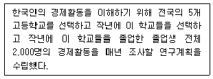
- 횡단연구
- 추세연구
- 동류집단연구
- 패널연구
(정답률: 알수없음)
6. 다음은 어떤 오류에 해당하는가?
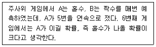
- 부정확한 관찰
- 과잉일반화
- 선별적 관찰
- 비논리적 추론
(정답률: 알수없음)
7. A후보 지지율 50%, B후보 지지율 45%, 표본 1,000명, 95% 신뢰구간에서 오차 ±3.10이었다. 이 경우 적절한 해석은?
- A후보의 지지율이 B후보보다 5% 앞선다.
- A후보의 실제지지율은 45%, B후보는 50%로 B가 앞선다.
- 신뢰구간이 95%이기에 B후보가 A후보를 앞지를 가능성은 전혀 없다.
- A후보가 B후보를 완전히 앞서가고 있다고 단정 할 수는 없다.
(정답률: 알수없음)
8. 개방형 질문과 폐쇄형 질문에 대한 설명으로 옳은 것은?
- 폐쇄형 질문에서는 응답자가 질문의 의도를 잘못 이해하거나 잘못 기재한 것을 찾아낼수 있다.
- 개방형 질문에서는 응답자가 어느 정도의 교육 수준을 갖추어야 한다.
- 폐쇄형 질문에서는 응답자들이 동일한 선택항목을 택했을 때 그들의 느낌과 견해가 동일하다.
- 개방형 질문은 민감한 주제여서 응답을 주저하거나 개인의 사생활과 관련된 문제에 적합하다.
(정답률: 알수없음)
9. 종단조사의 특성에 해당되지 않는 것은?
- 동일한 현상에 대해 시간을 달리하여 반복적으로 측정한다.
- 패널을 이용해서 실시하는 경우가 많다.
- 변화분석이나 추세분석에 유용하다.
- 광범위한 대상에 대해 표본조사를 실시한다.
(정답률: 알수없음)
10. 내용분석에 관한 설명으로 틀린 것은?
- 카테고리의 빈도여부는 중요하지 않다.
- 내용분석에서 분석결과의 객관성은 대단히 중요하다.
- 내용분석도 양적분석이나 모집단 파악이 어렵다는 단점이 있다.
- 2002년 월드컵이 한국 국가 이미지에 미친 영향을 언론에 보도된 자료를 이용하여 내용 분석할 수 있다.
(정답률: 알수없음)
11. 다음 중 쌍렬식(double-barreled question)이 아닌 것은?
- 귀하는 스크린 쿼터제도가 폐지 되어야 한다고 생각하십니까?
- 정부는 북한에 대한 지원을 중단하고 그 돈을서민을 위한 복지확충을 위해 사용해야 한다고 생각하십니까?
- 한국정부는 미국과 중국과의 우호관계유지를 외교정책의 최우선 과제로 삼아야 한다고 생각하십니까?
- 귀하는 로또나 경마처럼 사행심을 조장하는 제도들이 폐지되어야 한다고 생각하십니까?
(정답률: 알수없음)
12. 다음 중 조사과정에서 생기는 오류에 대한 설명으로 틀린 것은?
- 무응답자의 특성을 추정하여 이에 가중치를 두어 결과를 수정함으로써 무응답 오류를 줄일 수 있다.
- 무응답 오류가 많으면 신뢰성이 떨어진다.
- 불포함 오류는 적합하지 않은 표본추출법을 사용했을 때 발생하는 오류이다.
- 조사현장에서의 오류를 줄이기 위해서는 응답자와 비슷한 특성을 지닌 사람을 면접원으로 선발한다.
(정답률: 알수없음)
13. 다음 중 면접조사의 질문과정에서 일반적으로 유의해야 할 사항으로 틀린 것은?
- 응답자가 답변을 쉽게 할 수 있도록 질문에 대해 가능한 많은 설명을 해주어야 한다.
- 면접원이 질문을 다 읽기 전에 응답자가 응답하지 않도록 해야 한다.
- 응답자가 응답에 확신이 없는 경우 응답항목의 반복을 통해 확답을 끌어내야 한다.
- 불명확한 응답을 주어진 응답범주 속에 끼워 넣지 않도록 해야 한다.
(정답률: 알수없음)
14. 실제로 전혀 투표할 의사가 없는 응답자들이 특정 후보가 선두를 달리고 있어 이 후보를 지지하겠다고 응답하는 경우 발생되는 효과는?
- 악대마차효과(bandwagon effect)
- 관습성 효과(habit effect)
- 후광효과(halo effect)
- 체면치례효과(ego-threat effect)
(정답률: 알수없음)
15. 사회과학과 자연과학의 성격에 대한 비교로 옳지 않은 것은?
- 사회과학은 객관의 세계를 연구대상으로 하고, 자연과학은 인간의 행위를 연구대상으로 한다.
- 사회과학에서의 가치판단은 복잡하고 불가분의 것인데 반해, 자연과학에서의 가치는 선험적으로 단순하고 자명하다.
- 사회과학은 사람과 사란 간 의사소통에 보다 비중을 두고, 자연과학은 미래에 대한 예측까지를 포함한다.
- 사회과학에서는 사회적 관습이 인간의 행동을 규제하기도 하는데 반해, 자연과학은 법칙이 지배한다.
(정답률: 알수없음)
16. 다음 중 좋은 가설의 기준이 아닌 것은?
- 연구조사가 이루어진 후 연구결과가 학문적 의의를 나타낼 수 있어야 한다.
- 가설은 경험적 준거대상이 있는 것이어야 하며, 이는 실제 경험적으로 취급될 수 있는 용어나 현상과 주관적 내용이 개입되어야 한다.
- 필요한 조작이나 개념규정이 특정화 되어 있어야 하며, 물론 누구나 그것을 반복할 수 있어야한다.
- 실제로 사용하게 될 기술 및 방법과 관련성이 있도록 정립되어야 한다.
(정답률: 알수없음)
17. 다음 중 2차 자료의 장점에 해당되는 것은?
- 당면조사에 적합한 자료
- 자료의 정확성 평가
- 자료의 시효
- 자료수집의 경제성
(정답률: 알수없음)
18. 서베이조사와 현장조사를 비교한 것으로 옳은 것은?
- 서베이조사는 현장조사보다 타당도와 신뢰도가 높다.
- 현장조사는 서베이조사보다 타당도와 신뢰도가 높다.
- 서베이조사는 현장조사보다 타당도는 높고, 신뢰도는 낮다.
- 현장조사는 서베이조사보다 타당도는 높고, 신뢰도는 낮다.
(정답률: 알수없음)
19. 우편조사의 회수율이 떨어지는 단점을 보완하기 위한 방법과 가장 거리가 먼 것은?
- 회송용 봉투를 동봉한다.
- 봉투가 필요 없는 자기우편 설문지 형식을 사용한다.
- 추적우편(follow-up-mailing)을 실시한다.
- 설문 문항을 체계적으로 배열한다.
(정답률: 알수없음)
20. 다음 자료수집방법 중 비교표의 ( )에 들어갈 알맞은 것은?
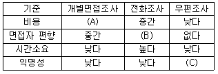
- A - 높다, B - 낮다, C - 높다
- A - 낮다, B - 낮다, C - 높다
- A - 높다, B - 높다, C - 높다
- A - 낮다, B - 높다, C - 높다
(정답률: 알수없음)
21. ‘어떤 학급의 영어성적이 편차가 작다’의 의미는?
- 영어성적이 좋다.
- 영어성적이 나쁘다.
- 영어성적이 고르다.
- 영어성적에 관해 판단할 수 없다.
(정답률: 알수없음)
22. 검정요인 중 총체적 개념과 다른 변수와의 관계에 있어서, 총체적 개념을 구성하는 요소들 중 어떤 것이 관찰된 결과에 결정적인 영향을 미치는가 하는 것을 파악하는데 사용되는 것은?
- 억제변수
- 왜곡변수
- 구성변수
- 매개변수
(정답률: 알수없음)
23. 사례연구에 관한 설명으로 옳은 것은?
- 인과관계를 발생론적 인과관계로 본다.
- 분석적인 설명을 추구한다.
- 변량을 설명하는데 초점을 둔다.
- 계량분석방법을 주로 사용한다.
(정답률: 알수없음)
24. 다음은 어떤 추론에 해당하는가?
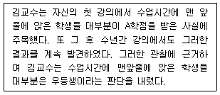
- 연역적 추론
- 귀납적 추론
- 확률적 추론
- 결정론적 추론
(정답률: 알수없음)
25. 다음 중 통제집단 사전사후측정 설계의 내적 타당도를 저해하는 것은?
- 역사요인 효과
- 성숙요인 효과
- 회귀요인 효과
- 측정과 처리의 상호작용 효과
(정답률: 알수없음)
26. 다음 중 연구계획서의 주요 항목이 아닌 것은?
- 연구목적
- 결과와 토론
- 문헌검토
- 자료수집방법
(정답률: 알수없음)
27. 고학력 집단에 대한 조사에서 자원봉사에 대한 참여가 실제보다 많게 나오거나, 역술에 대한 의존 정도가 실제보다 낮게 나오는 것과 같은 사회적 당위의 문제를 해결하기 위해 사용하는 설문조사 방법은?
- 고학력집단에 대한 가중표집
- 동일한 응답자에 대한 반복 조사
- 비구조화된 설문지를 바탕으로 한 심층면접
- 자기기입식 설문 방식 사용
(정답률: 알수없음)
28. 다음의 조사윤리 중 일반화에 대한 과학적 필요와 충돌할 수 있는 것은?
- 자발적 참여
- 익명성
- 비밀보장
- 응답자에 피해주지 않기
(정답률: 알수없음)
29. 관찰자의 활동이 처음에 공개적으로 알려지고, 따라서 사람들로부터 어느 정도 공개적으로 지원을 받는 조사자의 참여 수준은?
- 완전참여자
- 관찰자로서의 참여자
- 참여자로서의 관찰자
- 완전관찰자
(정답률: 알수없음)
30. 다음 중 선다식 질문에 대한 설명으로 옳은 것은?
- 개방형 질문의 일종이다.
- 응답의 항목은 총망라되어야 한다.
- 응답에서 질문의 강도를 알아내려는 방법이다.
- 응답항목은 반드시 하나만을 선택한다.
(정답률: 알수없음)
2과목: 고급조사방법론 II
31. 대학 입학 시험의 타당도를 판단하기 위한 기준으로 대학에서의 학업성과를 설정하여 대입시험점수와의 상관성을 살펴본 결과 별로 상관관관계가 없는 것으로 나타났다고 하자. 이때 대학입학시험의 타당도는 어떤 면에서 문제가 있다고 할 수 있는가?
- 내용타당도(content validity)
- 구성개념타당도(construct validity)
- 논리적 타당도(logical validity)
- 기준관련 타당도(criterion validity)
(정답률: 알수없음)
32. 여백부호화(edge coding)에 관한 설명으로 틀린 것은?
- 폐쇄형 질문 항목들을 위해 사용된다.
- 개방형 질문 항목들을 위해 사용된다.
- 별도의 부호화 용지가 필요 없게 만든다.
- 설문지에 마련된 여백에 응답자의 답을 적어 넣는 방식이다.
(정답률: 알수없음)
33. 다음 중 표본의 크기 결정에 관한 설명으로 틀린 것은?
- 모집단 요소들 간의 동질성이 고려되어야 한다.
- 표본의 신뢰도 등을 외적 요인에 해당된다.
- 질문의 내용이나 형식 등도 표본크기에 영향을 미친다.
- 일반적으로 다변량 분석을 하기 위해서는 더 큰 표본이 필요하다.
(정답률: 알수없음)
34. 다음 A연구원이 구성한 척도의 종류는?
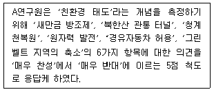
- 써스톤 척도
- 리커트 척도
- 거트만 척도
- 의미분화척도
(정답률: 알수없음)
35. 다음 중 변수의 코딩에서 유의할 점이 아닌 것은?
- 가능한 한 변수의 실제값을 부호화한다.
- 각 변수의 실질적인 의미를 잃지 않는 한도 내에서 가능한 큰 숫자를 부여한다.
- 빈칸을 실질적인 부호로 사용하지 않는다.
- 각 변수의 응답범위를 자세히 한다.
(정답률: 알수없음)
36. 전화번호부, 방송연감이나 기타 명부를 토대로 표본을 추출할 때 유리한 표본추출방법은?
- 단순무작위 표본추출
- 계통표본추출
- 층화표본추출
- 군집표본추출
(정답률: 알수없음)
37. 다음 중 비확률표본추출의 방법이 아닌 것은?
- 편의표본추출
- 판단표본추출
- 할당표본추출
- 계통표본추출
(정답률: 알수없음)
38. 자료처리과정 중 편집에 대한 설명으로 틀린 것은?
- 전체자료에 대한 일관성을 유지해야 한다.
- 응답되지 않은 항목은 다른 응답항목을 통해 추정되어서는 안된다.
- 자료의 완결성을 확보하는 것이 좋다.
- 애매모호한 응답은 정당한 판단기준을 가지고 수정할 수 있다.
(정답률: 알수없음)
39. 다음 중 솔로몬식 4집단 비교에 대한 설명으로 틀린 것은?
- 사전측정의 영향과 독립변수의 영향간 상호작용 효과를 통제하기 위한 실험설계방식이다.
- 무작위화를 통해 4개의 집단에 피험자가 배정된다.
- 4개의 집단 모두에 대해 사전조사와 사후조사를 실시한다.
- 실험의 내적?외적 타당도에 영향을 미치는 요인들을 통제하는데 가장 유리한 설계방식으로 간주된다.
(정답률: 알수없음)
40. 사회조사에서는 여러 가지 이유로 사실과 다른응답을 하는 경우가 있을 수 있다. 여기에는 의도적으로 과장하거나 축소하여 응답할 수도 있고, 의도적인 것은 아니지만 기억이 확실하지 않아 사실과 다른 응답을 하는 경우도 있을 수 있다. 다음 중 비 의도적인 이유에 의해 정확한 간찰을 어렵게 하는 요인이 아는 것은?
- 전진 압축오차(forward telescoping error)
- 최근성 편향(recency bias)
- 응답자 집합(response set)의 영향
- 사회적 소망성(social desirability)
(정답률: 알수없음)
41. 다음 중 표본프레임이 모집단을 대표하는 가장이상적인 경우는?
- 모집단과 표본프레임이 일치하는 경우
- 표본프레임이 모집단 내에 포함되는 경우
- 모집단이 표본프레임 내에 포함되는 경우
- 모집단가 표본프레임이 일부만 일치하는 경우
(정답률: 알수없음)
42. 다음 중 표본 설계과정에서 가장 먼저 고려해야 할 것은?
- 표본크기의 결정
- 모집단의 결정
- 표본추출방법의 결정
- 표본 프레임의 결정
(정답률: 알수없음)
43. 표본의 규모 n이 커질수록 평균의 표본분포가 정규분포를 따르게 되는데 그 이유를 무엇으로 설명 할 수 있는가?
- 최소 자승의 원리
- 중심극한정리
- 베이즈정리(bayesian theorem)
- 회귀경향성
(정답률: 알수없음)
44. 배제오차(noncoverage error)란?
- 표본에 적합한 표집틀(sampling frame)을 사용하지 못한 결과로 일어나는 오차
- 표본에 적합한 목표모집단(target population)을 사용하지 못한 결과로 일어나는 오차
- 목표모집단에는 있지만 표집틀에는 없는 표본요소들로 인해 일어나느 오차
- 표집틀에는 있지만 목표모집단에는 없는 표본요소들로 인해 일어나는 오차
(정답률: 알수없음)
45. 다음 상황에서 가장 유용한 확률표본추출방법은?
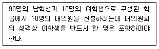
- 할당표본추출
- 단순무작위표본추출
- 층화표본추출
- 계통적표본추출
(정답률: 알수없음)
46. 다음 중 척도와 지수에 관한 설명으로 틀린 것은?
- 척도와 지수는 변수에 대한 서열측정이다.
- 척도와 지수는 변수의 합성측정이다.
- 지수점수는 척도점수보다 더 많은 정보를 제공한다.
- 지수는 개별 속성들에 할당된 점수를 합산해서 구성한다.
(정답률: 알수없음)
47. 복원중(문제 오류로 복원중입니다. 정확한 내용을 아시는 분께서는 오류신고를 통하여 내용 작성 부탁 드립니다. 정답은 4번입니다.)
- 복원중(정확한 보기 내용을 아시는분께서는 오류 신고를 통하여 내용 작성부탁 드립니다.)
- 복원중(정확한 보기 내용을 아시는분께서는 오류 신고를 통하여 내용 작성부탁 드립니다.)
- 복원중(정확한 보기 내용을 아시는분께서는 오류 신고를 통하여 내용 작성부탁 드립니다.)
- 복원중(정확한 보기 내용을 아시는분께서는 오류 신고를 통하여 내용 작성부탁 드립니다.)
(정답률: 알수없음)
48. 다음 ( )에 들어갈 가장 알맞은 것은?
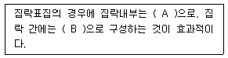
- A - 동질적, B - 동질적
- A - 동질적, B - 이질적
- A - 이질적, B - 이질적
- A - 이질적, B - 동질적
(정답률: 알수없음)
49. 다음 중 자료에 관한 설명으로 옳은 것은?
- 1차 자료는 연구자의 연구목적과는 다른 목적을 위하여 독창적으로 수집된 자료를 말한다.
- 2차 자료는 연구자가 현재 진행 중인 조사연구의 목적을 달성하기 위하여 직접 수집하는 자료를 말한다.
- 3차 자료는 메타분석과 깊은 관련을 갖는다.
- 2차 자료나 3차 자료는 쓰지 않는 것이 좋다.
(정답률: 알수없음)
50. 표본추출법에 관한 설명으로 옳은 것은?
- 다단계 군집표본 추출에서 일차표본추출의 요소는 분석의 단위와 일치한다.
- 체계적 무작위 표본추출은 요소의 목록이 표본 추출 간격과 일치하는 주기성(periodicity)을 지닐 때 매우 편향된 표본이 뽑힐 수 있다.
- 난수표는 확률표본 추출이 어려울 경우에 사용되는 대안적인 표본추출도구이다.
- 의도적 표본추출(purposive sampling)은 연구주제와 관련된 표본의 질에 관계없이 연구자가 편의대로 표본을 추출하는 것이다.
(정답률: 알수없음)
51. 다음의 분류조건을 가장 잘 충족하고 있는 것은?
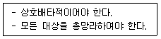
- 우리나라 사람을 대도시 거주자와 중소도시 거주자로 분류
- 대학생을 남학생과 여학생으로 분류
- 공무원을 9급 공무원, 8급 공무원, 7급 공무원, 6급 공무원으로 분류
- 여가를 즐기는 방법을 골프를 치는 것과 테니스를 치는 것으로 분류
(정답률: 알수없음)
52. 다음 중 구성적 타당성에 관한 내용으로 옳은 것은?
- 측정도구의 내용이 대표성을 띠고 있으며, 또 내용을 구성하고 있는 요인의 표본이 적합한가를 알아보는 문제이다.
- 측정도구에 의한 측정결과가 대상이 현재상태를 바르게 나타내고 있느냐의 문제이다.
- 측정의 기초를 이루고 있는 이론적 구성의 타당성을 문제로 삼기 때문에 다른 유형에 비해 이론적 측면에서 충실하다.
- 측정결과가 대상의 미래상태를 바르게 예측할 수 있도록 되었느냐의 문제이다.
(정답률: 알수없음)
53. 다음은 무엇에 관한 설명인가?
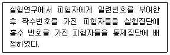
- 무작위표본추출
- 무작위화
- 짝맞추기
- 이중 눈가림 실험
(정답률: 알수없음)
54. 다음 사례에서 A연구원이 고려하지 못한 내적 타당도의 저해요인은?
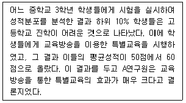
- 역사요인(history
- 실험대상의 변동(experimental mortality)
- 통계적 회귀(statistical regression)
- 검사요인(testing)
(정답률: 알수없음)
55. 공무원 공채 시험을 주관하는 기관이 출제자들에게 지엽적인 문제의 출제를 지양하도록 당부하였다면 무엇을 확보하기 위한 조치로 볼 수 있는가?
- 개념타당도
- 내용타당도
- 예측타당도
- 요인타당도
(정답률: 알수없음)
56. 다음 중 횡단면적 연구에 해당하는 것은?
- 어느 대학에서 금년도 신입생 전원을 대상으로 키와 몸무게를 잰 후 이들 간의 상관관계를 알아보았다.
- 30년 역사를 지닌 어느 대학은 매년 신입생 전원을 대상으로 장래 희망하는 직업을 물어보는 조사를 한다.
- 금년에 개교한 어느 대학은 금년 신입생을 대상으로 장래 희망하는 직업을 물어 본 후 내년에 도 그들을 대상으로 같은 내용의 조사를 할 예정이다.
- 어느 대학의 연구소에서는 10년 단위로 4∙19세대 1,000명을 뽑아 그들의 의식 변화를 조사한다.
(정답률: 알수없음)
57. 다음 중 분석단위에 대한 설명으로 틀린 것은?
- 급여를 많이 주는 기업체일수록 생산성이 높다는 결과를 바탕으로 고임금 종업원이 생산성이 높다는 결론을 내렸다면 생태학적 오류를 범한 것이다.
- 급여를 많이 받는 종업원일수록 생선성이 높다는 결과를 바탕으로 고임금 기업체가 생선성이 높다는 결론을 내렸다면 개인주의적 오류를 범한 것이다.
- 분석단위를 둘러싼 혼란은 오류화가능성을 저해한다는 점에서 문제시된다.
- 분석단위를 둘러싼 혼란은 결과 해석의 타당성을 저해한다는 점에서 문제시된다.
(정답률: 알수없음)
58. 다음 중 실험설계에 대한 설명으로 틀린 것은?
- 일반적으로 실험에서 피험자 집단이 더 큰 모집단을 대표해야 한다는 요구는 실험집단과 통제 집단이 서로 유사해야 한다는 요구보다 상대적으로 덜 중요하다.
- 피험자들을 실험집단과 통제집단에 무작위적으로 적절히 배정했다면 굳이 사전조사를 할 필요가 없다.
- 고전적 실험은 실험집단과 통제집단에 대한 사전조사와 사후조사를 통해 독립변수가 종속변수에 미치는 영향을 검증한다.
- 캠벨과 스탠리가 제시한 3가지 형태의 사전실험설계는 각각 진짜 실험설계가 가지는 모든 요건들을 가지고 있다.
(정답률: 알수없음)
59. 다음 중 코드책(codebook)의 용도와 관련이 없는 것은?
- 조사결과의 해석에 활용
- 조사결과의 분석에 활용
- 조사결과의 컴퓨터 입력에 활용
- 조사결과의 양적 자료화에 활용
(정답률: 알수없음)
60. 데이터 처리후 여러 가지 에러가 발생하는 경우 코딩에러를 찾아내서 수정하는 것은?
- 데이터 보완
- 데이터 리코딩
- 데이터 입력
- 데이터 클리닝
(정답률: 알수없음)
3과목: 고급통계처리및분석
61. 대형금융기관에 근무하는 사무직원에게 그의 감독자에 대한 만족도를 구하기 위하여 다중회귀모형을 사용하였다. 사용된 다중회귀모형은 yj=β0+β1x1+β2x2∙∙∙+β6x6+ɛ이고 30개의 자료가 조사되었다. 이때 귀무가설 H0=β1β2=β3=β4=β6=0을 검정하기 위한 F 검정통계량의 값은 얼마인가? (단, 완전모형에서 오차제곱합은 1,049이고 축소모형에서 오차제곱합은 3,297이다.)
- 6.4
- 8.2
- 10.5
- 12.9
(정답률: 알수없음)
62. 두 집단 g1과 g2에 해당하는 확률밀도함수 F1(x)와 F2(x)가 주어졌다고 가정하자. 전체자료의 80%가 집단 g1에 속하고, 전체자료의 20%가 집단 g2에 속한다고 가정하고 오분류비용에 관한 정보는 C(2│1)= 5, C(1│2) = 10이라 했을 때, 오분류비용의 기댓값(ECM)을 최소화하는 분류영역으로 맞는 것은?
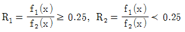
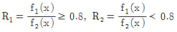
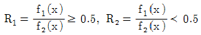
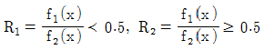
(정답률: 알수없음)
63. 5개의 변수에 대하여 두 대상의 관찰값이 주어진 표와 같다. 이때 군집분석의 거리 측정방식 중에서 2차의 민코우스키 거리(Minkowski distance)를 이용하여 대상 I와 대상 k의 거리를 구하면?
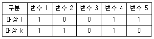
- 2
- 4
- √2
- √4
(정답률: 알수없음)
64. 다음 중 가설검증과 관련된 설명으로 틀린 것은?
- 표본으로부터 입증하고자 하는 가설은 대립가설이다.
- 귀무가설을 기각시키는 검정통계량의 관측값의 영역을 기각역이라고 한다.
- 제1종의 오류를 범할 최대허용확률을 유의수준이라고 한다.
- 검정통계량의 관측값에 대해 귀무가설을 기각할 수 없는 최소의 유의수준을 p-값이라고 한다.
(정답률: 알수없음)
65. 다음 중 모평균의 점 추정량(point estimator)의 성질을 나타내지 않는 것은?
- 불편추정량(unbiased estimator)
- 일치추정량(consistent estimator)
- 충분추정량(sufficient estimator)
- 최우추정량(maximum likelihood estimator)
(정답률: 알수없음)
66. 다음 중 판별함수를 작성하는 기본원칙을 가장 바르게 설명한 것은?
- 집단 내 분산에 비해 집단 간 분산이 최대가 되도록 판별함수를 작성한다.
- 집단 내 분산에 비해 집단간 분산이 최소가 되도록 판별함수를 작성한다.
- 집단 간 상관계수 행렬이 단위행렬이 되는 판별함수를 작성한다.
- 집단 간 공분산 행렬이 단위행렬이 되는 판별함수를 작성한다.
(정답률: 알수없음)
67. 한 정유회사의 휘발유는 소형차인 경우 1L당 15㎞를 갈 수 있다고 공표되어 있으나, 소비자단체에서는 이 주장이 옳지 않음을 입증하려고 한다. 다음은 5대의 소형차를 랜덤으로 추출하여 측정한 1L당 주행거리이다. 귀무가설 1L당 15㎞ 조건 하에서 윌콕슨부호순위 검정통계량은?
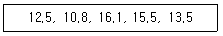
- 2
- 3
- 4
- 5
(정답률: 알수없음)
68. 중심극한정리에 관한 설명으로 틀린 것은?
- 표본평균의 확률분포에 관한 정리이다.
- 표본평균의 평균은 모평균과 같고 분산은 표본의 크기에 역비례한다.
- 표본평균을 표준화한 확률변수의 확률분포는 표본의 크기에 관계없이 정규분포를 한다.
- 중심극한 정리는 모집단의 분포에 상관없이 성립한다.
(정답률: 알수없음)
69. 단순회귀분석을 위하여 다음과 같은 자료를 얻었다. 이에 대한 설명으로 틀린 것은?
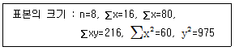
- x에 대한 y의 회귀직선의 기울기의 추정값은 2이다.
- x에 대한 y의 회귀직선의 절편의 추정값은 6이다.
- y에 대한 x의 회귀직선의 기울기의 추정값은 0.32이다.
- y에 대한 x의 회귀직선의 절편의 추정값은 9.36이다.
(정답률: 알수없음)
70. 다음 표는 시중에 잘 알려진 30개 회사의 재무자료에 대해 판별분석을 한 결과를 정리한 것이다. 정확도(hit ratio)와 오류율(error rate) 값은?
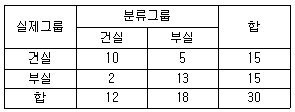
- 정확도 : 66.7%, 오류율 : 33.3%
- 정확도 : 86.7%, 오류율 : 13.3%
- 정확도 : 76.7%, 오류율 : 23.3%
- 정확도 : 40.0%, 오류율 : 60.0%
(정답률: 알수없음)
71. 처음으로 위암에 걸린 환자에 대해 다음 두 가지 치료방법에 따라 생존연수가 달라지는지 알아보기 위해 의학 연구자가 조사한 결과가 다음과 같다. 치료법에 따라 생존연수의 차이가 있는지를 윌콕슨 순위합검정법을 이용할 때 검정통계량의 값은 얼마인가?
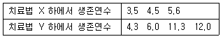
- 5
- 6
- 7
- 8
(정답률: 알수없음)
72. 다음 중 계층적(hierachical) 군집연산방식이 아닌 것은?
- 단일연결법(single linkage)
- 최장 혹은 완전연결법(complete linkage)
- 순차적분계법(sequential threshold method)
- 평균연계법(average linkage)
(정답률: 알수없음)
73. 다음 중 군집분석방법에 관한 설명으로 틀린 것은?
- 군집분석에서는 변수의 선택이 중요한 문제이므로 회귀분석에서처럼 의미가 없는 변수를 제거하는 것이 군집분석의 첫 단계이다.
- 군집분석에서는 최종결과에 대한 통계적 유의성을 검정할 수 없다.
- 군집분석방법은 다양한 특성을 지닌 관찰대상을 유사성을 바탕으로 동질적인 집단으로 분류하는데 쓰이는 기법이다.
- 군집분석의 목적은 주어진 다수의 관측개체를소수의 그룹으로 나눔으로써 대상집단을 이해하고 군집을 효율적으로 활용하고자 하는 것이다.
(정답률: 알수없음)
74. 두 설명변수 x1과 x2를 사용한 회귀 추정식이  일 때, 가장 적절한 설명은?
일 때, 가장 적절한 설명은?
- 회귀계수의 값 1.7의 의미는 설명변수 x1의 값을 1단위 증가시킬 때 반응변수 y의 값은 1.7단위증가할 것임을 나타낸다.
- 회귀계수의 값 2.5의 의미는 설명변수 x1을 고정시킨 상태에서 의 값을 1단위 증가시키면 반응변수 y의 값은 단위 증가할 것임을 나타낸다.
- 설명변수 x1만을 이용하여 회귀모형을 적합하였을 때 회귀추정식의 기울기는 1.7일 것이다.
- 설명변수 x2만을 이용하여 회귀모형을 적합하였을 때 회귀추정식은
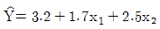
일 것이다.
(정답률: 알수없음)
75. 두 모평균의 차이에 대한 신뢰구간을 구하는 과정에 대한 설명으로 틀린 것은? (단, 두 모집단의 분산은 미지이다.)
- 소표본의 경우 모집단에 대한 정규분포의 가정이 필요하다.
- 소표본의 경우 모집단에 대한 등분산의 가정이 요구된다.
- 대표본의 경우 정규성의 가정 없이 t분포를 이용하여 구할 수 있다.
- 대표본의 경우 Behrens-Fisher의 문제가 발생하지 않는다.
(정답률: 알수없음)
76. N(μ, σ2)인 정규분포에서 n=36인 표본을 추출했을 때 표본평균 ,
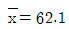
, 표본표준편차 s = 14이었다. 모평균 μ에 대한 90% 양측 신뢰구간은?- (60.4, 63.7)
- (58.3, 65.9)
- (57.5, 66.7)
- (56.7, 67.5)
(정답률: 알수없음)
77. 두 교수법을 비교하기 위하여 그룹 Ⅰ과 그룹 Ⅱ에 50명씩 랜덤하게 배치하여 한 한기 강의가 끝 난 후에 학생들이 받는 학점을 조사하여 다음의 표를 얻었다. 위 내용을 검정하기 위하여 사용되는 통계량의 분포는?
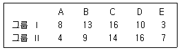
- 자유도가 3인 카이제곱분포
- 자유도가 4인 카이제곱분포
- 자유도가 5인 카이제곱분포
- 자유도가 10인 카이제곱분포
(정답률: 알수없음)
78. 추정량의 성질에 대한 설명으로 틀린 것은?
- 불편성(unbiasedness)은 추정량의 기댓값이 추정하려는 모수가 된다는 성질이다.
- 표본평균은 항상 모평균의 불편추정량이다.
- 일치성(consistency)은 추정량의 분산이 다른 추정량의 분산보다 작다는 성질이다.
- 표본평균은 일치성을 갖고 있기 때문에 표본이 커질 때 모평균과의 오차가 작아질 확률이 높다.
(정답률: 알수없음)
79. 다음 중 유의확률의 정의로서 올바른 것은?
- 제1종 오류를 범할 수 있는 최대 확률로서 가설 검정에서 중요한 확률이므로 미리 정한다.
- 제2종 오류를 범할 수 있는 최대 확률로서 가설 검정에서 중요한 확률이므로 미리 정한다.
- 관측치로 검정통계량을 추정할 때 귀무가설을 기각시킬 수 있는 최소의 유의수준이다.
- 관측치로 검정통계량을 추정할 때 대립가설을 기각시킬 수 있는 최소의 유의수준이다.
(정답률: 알수없음)
80. 정규분포 N(μ, 100)을 따르는 모집단으로부터 추출된 크기 100의 랜덤표본을 이용하여, 귀무가설 H0 : μ = 1.5과 대립가설 H1 : μ > 1.5에 대하여 표본평균이 1.8보다 크면 귀무가설(H0)을 기각하려고 한다. 이 때의 제1종 오류는? (단, Z는 표준정규분포를 따라는 확률변수이다.)
- P(Z > 0.03)
- P(Z > -0.3)
- P(Z > 0.3)
- P(Z > 1.8)
(정답률: 알수없음)
81. 두 회사에서 생산한 승용차의 급제동 거리를 비교하기 위하여 각 회사에서 64대의 승용차를 랜덤하게 추출하여 평균 80㎞에서 급제동시켜서 정지한 곳까지의 거리를 측정한 결과 아래의 자료를 얻었다. 위 자료를 볼 때, 두 회사에서 생산한 승용차의 제동거리가 다른지를 알아보기 위한 t-검정 통계량의 대략적인 값은? (단, 두 회사에서 생산되는 승용차의 급제동거리의 모분산은 동일하다고 가정한다.)
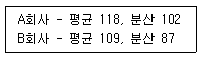
- 2.2
- 3.2
- 4.2
- 5.2
(정답률: 알수없음)
82. A, B, C 세 종류의 식이요법의 효과를 비교하고자 실험을 하였다. 12명의 건강상태가 비슷한 회복기의 환자를 랜덤으로 3집단으로 나누어 일정기간 동안 A, B, C의 식이요법을 시행한 후 체중감소 자료를 분석한 결과 다음과 같은 Duncan 검정의 결과를 얻었을 때 설명으로 틀린 것은?
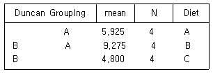
- A집단이 가장 좋은 식이요법 효과를 얻었다.
- A집단과 B집단은 식이요법 효과에 차이가 있다.
- B집단과 C집단은 식이요법 효과에 차이가 있다.
- A집단과 C집단은 식이요법 효과에 차이가 있다.
(정답률: 알수없음)
83. 아이스크림이나 빙과류의 판매량을 월별로 산출하였다. 이 자료를 분석하는 경우 우선적으로 고려해야만 하는 사항은?
- 순환변동
- 불규칙변동
- 추세
- 계절변동
(정답률: 알수없음)
84. 서로 다른 두 종류의 제품 A, B를 비교하여 아래와 같은 실험결과를 얻었다. 제품 A, B에 대한 평균 차이에 대한 95% 신뢰구간의 설명으로 옳은 것은 어느 것인가?
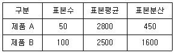
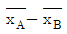
의 95% 신뢰구간은 (300-1.96＊5, 300+1.96＊5)이다.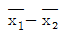
의 95% 신뢰구간은 (300-1.96＊7, 300+1.96＊7)이다. 의 95% 신뢰구간은 (300-1.96＊5, 300+1.96＊5)이다.
의 95% 신뢰구간은 (300-1.96＊5, 300+1.96＊5)이다.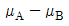
의 95% 신뢰구간은 (300-1.96＊7, 300+1.96＊7)이다.
(정답률: 알수없음)
85. 회귀분석에서 다중 공선성이 존재할 때 사용하는 방법이 아닌 것은?
- 능동 회귀(ridge regression)
- 주성분 회귀(principle component regression)
- 잠복근 회귀(latent root regression)
- 로버스트 회귀(robust regression)
(정답률: 알수없음)
86. Runs 검정은 일반적으로 두 종류의 결과만을 갖는 경우에 독립성의 여부를 알아보는 비모수적 검정방법이다. 어느 모집단으로부터 15명의 학생들을 표본추출하여 얻은 성별자료가 주어진 표와 같다. 이 때 Runs 검정에 사용되는 통계량의 값은?
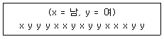
- 6
- 7
- 8
- 9
(정답률: 알수없음)
87. 30개의 관측자료를 갖고 종속변수 Y와 관련이 있다고 생각되는 2개의 독립변수 X1, X2를 활용한 회귀분석을 하고자 한다. 우선 (X1, X2)가 모두 포함된 회귀분석을 실시한 결과 오차제곱합(SSE)은 230이고, X1만 포함된 회귀분석을 실시한 결과 오차제곱합 (SSE)은 250이다. 이 경우 X2가 제거될 수 있는지 여부를 검정하기 위한 부분 F-검정(Partial F-test) 통계값은?
- 2.160
- 2.211
- 2.348
- 2.435
(정답률: 알수없음)
88. 귀무가설이 참일 때 표본의 크기가 20인 경우 부호순위검정통계량의 평균값은?
- 100
- 1⑤
- 110
- 115
(정답률: 알수없음)
89. 어떤 직물의 가공시 처리액의 농도가 직물의 인장강도에 영향을 미치는지의 여부를 조사하기 위해 3가지 농도 A1, A2, A3에서 각각 반복 5회, 총 15회를 랜덤하게 처리한 후 인장강도를 측정한 결과가 다음과 같다. 농도에 따른 인장강도에 차가 있는지를 알아보기 위한 F비의 값은?
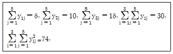
- 12
- 15
- 17
- 20
(정답률: 알수없음)
90. 다음 중 회귀분석에서 가설검정에 필요한 가정들이 충족되지 않을 때의 대책으로 적절하지 않은 것은?
- 잔차분포를 검토하여 회귀가정 여부를 탐색한다.
- 자료값을 변형하여 필요한 회귀가정에 더욱더 더 부합되도록 만든다.
- 이상점(극단값)을 찾아내어 처리한다.
- 회귀계수의 편상관계수를 검정해본다.
(정답률: 알수없음)
91. 텔레마케팅직업에 종사하는 사람들의 한 달 평균 임금은 200만원을 초과한다는 주장이 있다. 이 주장이 옳은지를 확인하기 위하여 이 직업을 가진 사람들 중에서 임의로 15명을 추출하여 그들의 한 달 평균 임금을 조사하였더니 다음과 같은 결과를 얻었다. 유의수준 5%에서 부호순위검정을 할 때, 부호순위 검정 통계량의 값이 W+ =80이면 다음 중 옳은 것은? (단, W+(0.007, 13)=80, W+(0.045, 14)=80, W+ (0.138, 15)=80이다.)
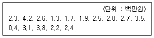
- 유의확률이 0.007이므로 귀무가설을 기각한다. 따라서 이 직업을 가진 사람들의 한 달 평균임금은 200만원을 초과한다고 볼 수 있다.
- 유의확률이 0.045이므로 귀무가설을 기각한다. 따라서 이 직업을 가진 사람들의 한 달 평균임금은 200만원을 초과한다고 볼 수 있다.
- 유의확률이 0.138이므로 귀무가설을 기각한다. 따라서 이 직업을 가진 사람들의 한 달 평균임금은 200만원을 초과한다고 볼 수 있다.
- 유의확률이 0.138이므로 귀무가설을 기각시키지 못한다. 따라서 이 직업을 가진 사람들의 한 달 평균임금은 200만원을 초과한다고 말할 수 없다.
(정답률: 알수없음)
92. 군집분석(cluster analysis)에서 두 군집 간의 거리를 측정하는 방법이 아닌 것은?
- 평균연결법
- 완전연결법
- 왈드방법
- 분산연결법
(정답률: 알수없음)
93. 평균이 μ, 분산이 σ2인 분포로부터 크기 n인 확률표본 X1, …Xn을 얻었을 때 σ2에 대한 다음 두 추정량이 다음과 같다. 이들에 대한 설명으로 옳은 것은? (단, E는 기댓값, V는 분산, MSE는 평균제곱오차, Bias는 편향(편의)를 의미한다.)
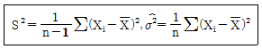
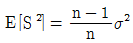
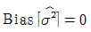
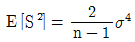
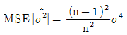
(정답률: 알수없음)
94. 어느 스포츠센터에서 회원 50명을 대상으로 상대적 체중(X1), 허리둘레(X2), 맥박수(X3) 등 신체생리적 변수와 턱걸이(Y1), 윗몸일으키기(Y2), 줄넘기(Y3) 등의 운동능력 변수들을 조사하였다. 신체생리적 변수군(X1, X2, X3)과 운동능력 변수군(Y1, Y2, Y3)의 사이의 선형적 연관성을 분석하고자 한다. 이 경우에 알맞은 통계적 분석방법은?
- 요인분석
- 군집분석
- 경로분석
- 정준상관분석
(정답률: 알수없음)
95. 다음 분산분석법에 대한 설명으로 틀린 것은?
- 두 집단의 분산을 비교할 때 사용한다.
- 세 개 이상의 집단의 평균을 비교할 때 사용한다.
- 분산분석 모형은 집단 간 동일분산을 가정한다.
- 각 집단 내에서의 분포가 정규분포이다는 가정하에서 사용한다.
(정답률: 알수없음)
96. 정규분포를 따르는 집단의 모평균의 값에 대하여 H0=μ=10, H1 : μ >10을 세우고 표본 25개의 평균을 구한 결과
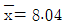
를 얻었다. 모집단의 표준편차를 5라고 할 때 다음 확률값을 이용하여 구한 유의확률(p-value)은? (단, Z는 표준화정규 확률변수를 나타낸다.)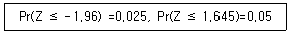
- 0.0125
- 0.025
- 0.⑤
- 0.975
(정답률: 알수없음)
97. 다음은 세 집단(처리)의 평균에 차이가 있는지 알아보기 위해 분산분석을 한 결과이다. 세 집단의 평균에 차이가 없다는 귀무가설을 검정하기 위한 F-검정통계량의 값은? (문제 오류로 복원중입니다. 정확한 내용을 아시는 분께서는 오류신고를 통하여 내용 작성 부탁 드립니다. 정답은 4번입니다.)
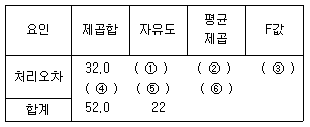
- 복원중(정확한 보기 내용을 아시는분께서는 오류 신고를 통하여 내용 작성부탁 드립니다.)
- 복원중(정확한 보기 내용을 아시는분께서는 오류 신고를 통하여 내용 작성부탁 드립니다.)
- 복원중(정확한 보기 내용을 아시는분께서는 오류 신고를 통하여 내용 작성부탁 드립니다.)
- 복원중(정확한 보기 내용을 아시는분께서는 오류 신고를 통하여 내용 작성부탁 드립니다.)
(정답률: 알수없음)
98. 여러 개의 설명변수를 가지는 중회귀 모형에 대한 설명으로 틀린 것은?
- 설명변수를 추가하면 Cp의 값은 증가한다.
- 설명변수를 추가하면 결정계수(R2)의 값은 감소하지 않는다.
- 설명변수들 사이의 상관계수 값이 크면 다중공선성(multicollinerarity)의 문제가 발생한다.
- 최적의 모형은 주어진 모든 설명변수를 다 포함하지 않을 수도 있다.
(정답률: 알수없음)
99. 다음 정리 중 최소분산불편추정량(UMVUE)을 구하는데 직접 사용되는 정리는?
- Bonferroni 부등식
- Lehmann-Scheffe 정리
- Basu 정리
- Neyman-Person 정리
(정답률: 알수없음)
100. 요인(A)의 3수준간의 관찰값이 차이가 있는지를 검정하고자 하는 경우, 이에 대한 설명으로 틀린 것은?
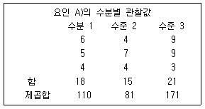
- 분산분석표에서 자유도는 요인(A)에 기인한 자유도가 2이고 오차에 기인한 자유도가 6이다.
- 분산분석모형은 다음과 같다. Xij=μ+αi+ϵij 여기서 μ는 전체평균이고, αi는 수준 I의 효과이고, εij는 오차항이다.
- 오차항의 분산의 추정값(MSE)은 5.33이다.
- F통계량은 5.2이다.
(정답률: 알수없음)